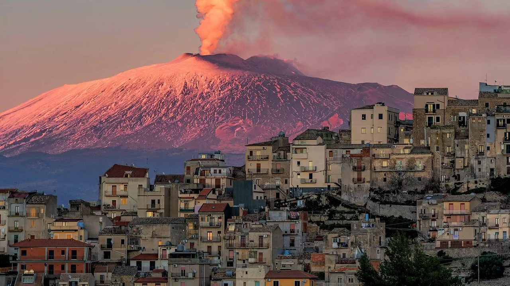

Do Now: Erinnerst du dich?
3 Min. · allein
1Nenne zu jedem Buchstaben von VULKAN einen Fachbegriff oder ein Beispiel aus dem Vulkanismus. Schreibe auf dein Mini-Whiteboard.
1Ordne die Begriffe den Erklärungen zu. Tippe erst auf einen Begriff, dann auf die passende Erklärung.
1Beschreibe in höchstens 2 Sätzen, was bei einem Vulkanausbruch passiert. Nutze mindestens 3 Fachbegriffe.
In der Magmakammer steigt der Druck. Das Magma steigt durch den Schlot nach oben und tritt am Krater als Lava und Asche aus.
Leben am Ätna
3 Min. · Plenum
Was fällt euch auf? Was passt für euch nicht zusammen?
Eure Fragen
4 Min. · Plenum
Wo liegt der Ätna?
3 Min. · Plenum
Lokalisiere auf der Karte: Wo liegt Italien?D–E
Schritt 1 von 2
Leitfrage und Spontanurteil
3 Min. · Plenum
Unsere Frage: …
1Beurteile spontan: Würdest du am Ätna Landwirtschaft betreiben? Setze ein Kreuz.
RisikoChance
0 Kreuze · Klick auf die Linie setzt ein Kreuz.
Partnerpuzzle
4 Min. · Plenum
Du bist A oder B.
A + A Chancen · M1–M4
B + B Risiken · M4–M7
Arbeitsphase
15 Min. · allein, Partner, Gruppe
Bearbeite jetzt das Arbeitsblatt.
Think · allein
- Lies das Material, markiere Schlüsselwörter.
- Notiere Stichpunkte.

Pair · mit deinem Partner
- Tauscht euch über eure Stichpunkte aus.
- Notiert Punkte, die euch noch fehlen.
Share · in der Vierergruppe
- Stellt eure Ergebnisse vor und diskutiert.
- Ergänzt, was fehlt.
Präsentation und Sicherung
10 Min. · Plenum
Unsere Frage: …
Begründetes Urteil
10 Min. · Plenum
Unsere Frage: …
1Beurteile jetzt mit deinen Ergebnissen: Chance oder Risiko? Setze ein neues Kreuz.
RisikoChance
0 Kreuze
Satzbausteine: Ich sehe die Landwirtschaft am Ätna eher als Chance / Risiko, weil … · Das wichtigste Argument ist … · Zwar …, aber …
Feedback
5 Min. · Plenum
Ordne dich einem Bild zu und begründe deine Entscheidung.

Ausblick
Würdet ihr Urlaub am Ätna machen? In der nächsten Stunde beurteilt ihr den Tourismus am Ätna.